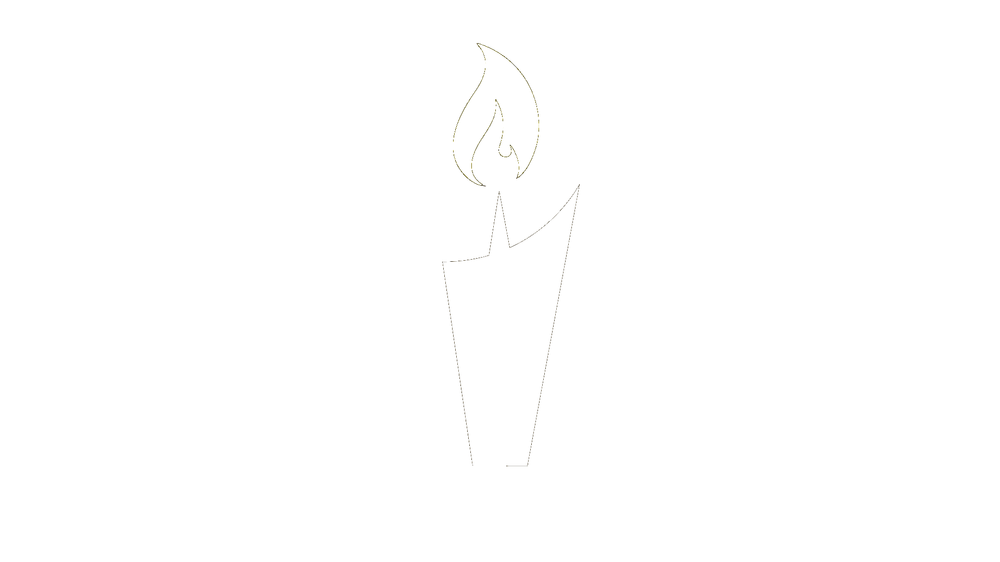

Luz na Política
Somos um movimento de fé dedicado a acender a chama da esperança na política. Inspirados pelos princípios bíblicos e guiados pelo Espírito Santo, promovemos transparência, integridade e a renovação do bem comum, afastando as trevas da corrupção.